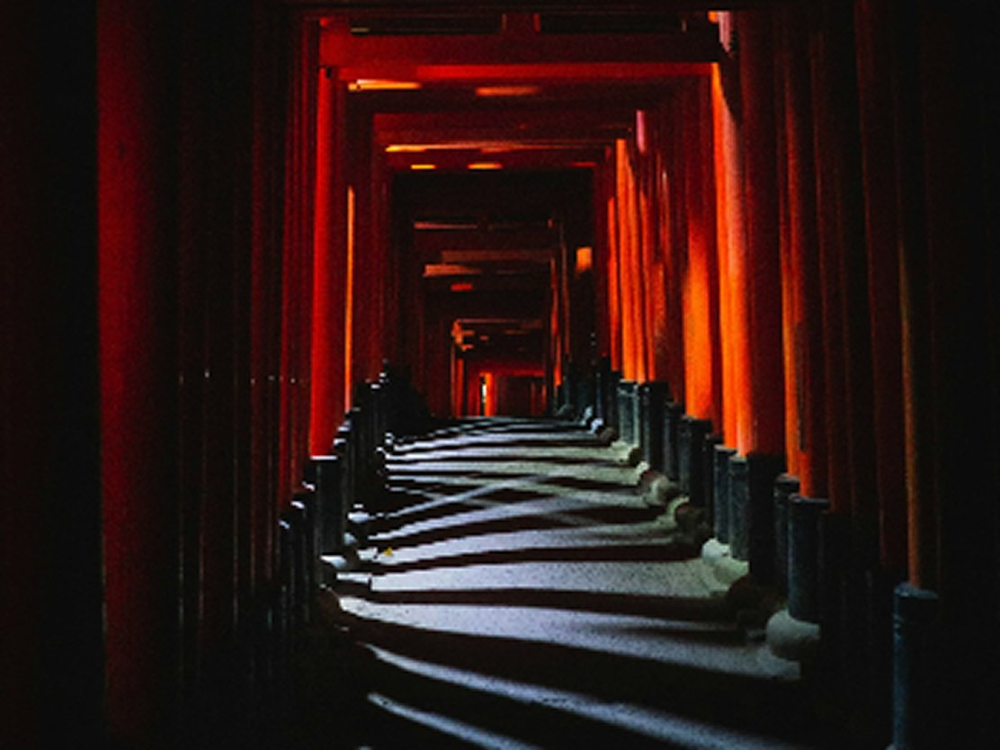

2026 ／ 當期
09.14 — 12.15, 2026
馬雅神話互動特展
踏入古馬雅文明的神聖宇宙觀——一個以星辰為經典的文明。互動裝置重現了古球場、卓爾金曆法，以及神話冥界西芭爾巴。
南翼．第 12–16 展廳 · 互動／常設展 購票入場
踏入古馬雅文明的神聖宇宙觀——一個以星辰為經典的文明。互動裝置重現了古球場、卓爾金曆法，以及神話冥界西芭爾巴。
南翼．第 12–16 展廳 · 互動／常設展 購票入場
一場深入伊斯蘭神秘主義的沉浸之旅——透過音樂、書法與神聖空間的幾何美學，探索自我與神聖之間的距離。
東翼．第 4–7 展廳 購票入場追溯 2,500 公里的神聖地理——恆河作為朝聖之路、生態危機與活生生的神祇，在攝影、文物與見證中呈現。
北廳．第 1–3 展廳 購票入場